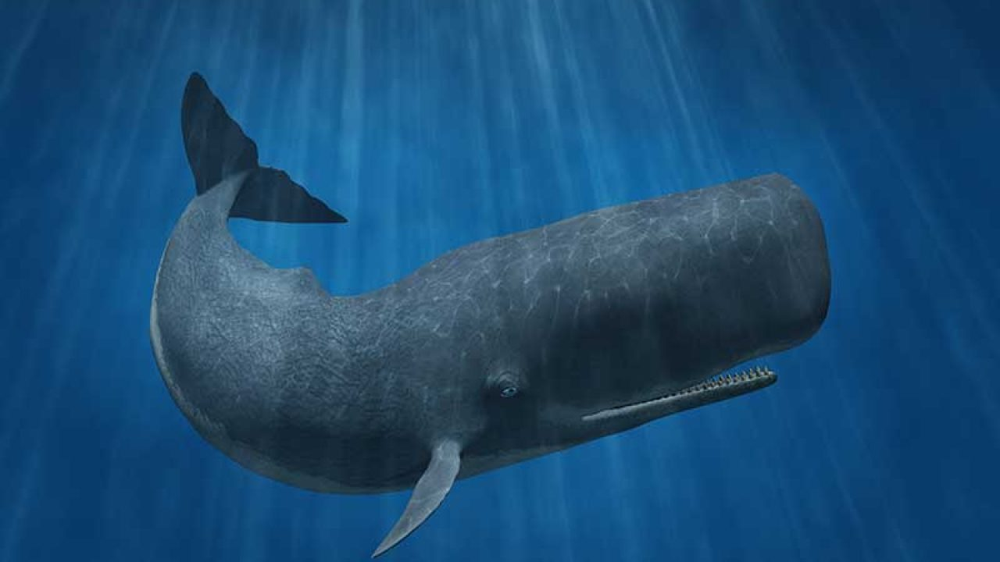

O que é Biologia Marinha?
A biologia marinha é o estudo dos organismos que vivem no ambiente marinho, incluindo plantas, animais e microorganismos. Ela abrange diversos aspectos, como a ecologia marinha, a fisiologia dos organismos marinhos e a conservação dos ecossistemas oceânicos.
Exemplo de organismo marinho
O cachalote (Physeter macrocephalus) é um cetáceo odontoceto, ou seja, uma baleia com dentes, distinguindo-se das baleias filtradoras (misticetos) por possuir dentes no maxilar inferior e ser carnívoro, alimentando-se principalmente de lulas gigantes e outros cefalópodes.

Baleia Cachalote (Physeter macrocephalus)